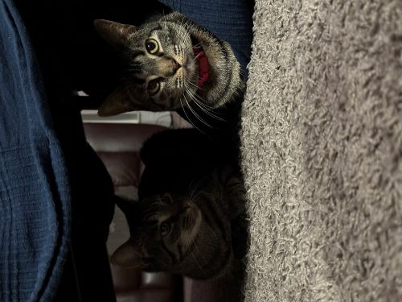

Hello this is my very first blog, and is going to be about my cats!
Cats are awesome and I have two myself! My two cats are just over a year old and are very full of life, especially when it comes to feeding time. Always an ear full when that comes around. They are two gray tabby cats that I found off of petfinder. They are sisters from the same litter and are inseparable from each other. Their names are Gucci and Prada, and those were the names they had when I got them. Prada likes to wake me up by trying to dig herself under my covers so she can lay next to my legs. Gucci tends to take the more aggressive approach and yells at me until I wake up because I inconvenience her breakfast time. They both are extremely cuddly and very friendly with everyone. When I first got them it was a bit of a struggle to get them to accept me and my affection, but after about a week both of them were waiting by my door for me to come back home from class. Now if I leave my bedroom and go out into my common room, they have to follow me or they will make sure I hear their displeasure.

| Gucci | Prada |
|---|---|
| Slimmer Head Shape | Fuller Head Shape |
| Lighter Colored Eyes | PlaceHolder |
| No Collar | Red Collar |
Written by Nicholas Bargy